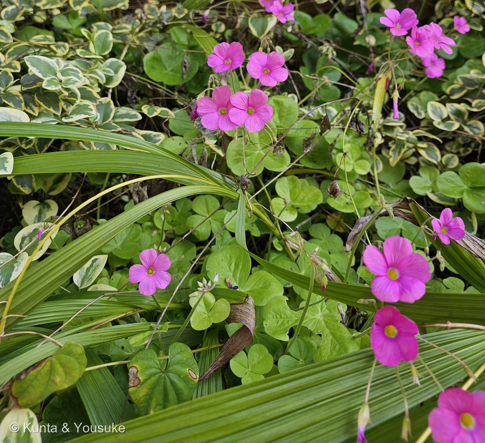
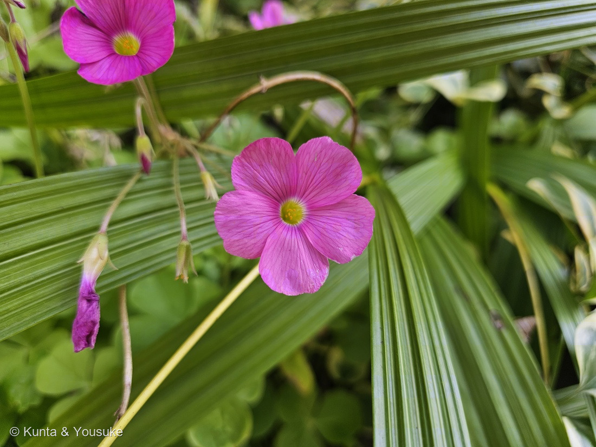

地図を読み込んでいるよ…
🔍 写真も地図も、押しているあいだ拡大して見られるよ（スマホは指を置いてすこし待ってね）。
🌍 の地図＝この子がもともと自生している場所を緑に。南アフリカの東ケープ州からクワズール・ナタール州。日本には江戸時代の末に観賞用に入り、野生化している。くわしくは下の地図の説明を見てね。
⚠出典の「東ケープ州からクワズール・ナタール州」は南アフリカの東がわだけだけれど、地図は国までしか塗れないので南アフリカ共和国ぜんぶを塗った。⚠オーストラリア・ヨーロッパ・北アメリカ・日本では野生化しているけれど（Groom 2019）、そのぶんは塗っていない。
⚠ 地図は国（日本と中国だけ県・省）までしか塗れないから、ほんとうの分布より広く見えていることがあるよ。地図はだいたいの場所。正確なところは、上の文を見てね。
ハナカタバミ
Oxalis bowiei W.T.Aiton ex G.Don
英名 · Bowie's wood-sorrel（ボウイのカタバミ）・red-flower woodsorrel
カタバミ科 · Oxalidaceae（カタバミ属 Oxalis · カタバミ目 Oxalidales）── ⭐080 カタバミのなかま・320 モンカタバミ・324 サンカクカタバミと同じカタバミ属
燻太さんの言葉「ピンクの大きなお花に、大きなハートの葉っぱ。普通のカタバミよりも、ずっと存在感もあるね。」── ⭐花のまんなかが黄色っぽく、花びらがすき間なく重なるのが、この子のしるし
⭐⭐⭐⭐ 名前と学名の由来 ── 名前のもとは、押し葉ではなく1枚の絵
- ⭐⭐⭐ 燻太さんの言葉＝「ピンクの大きなお花に、大きなハートの葉っぱ。普通のカタバミよりも、ずっと存在感もあるね。」──⭐⭐名前もそのまま「ハナ（花の）カタバミ」だよ。
- ⭐ 三河の植物観察は、漢字を「花紫片喰、花酢漿草」と書いている。⭐「カタバミ」の名前のお話は 080 カタバミのなかまにあるよ。
- ⭐⭐⭐ 種小名 bowiei＝人の名前。ジェームズ・ボウイ（1789年ごろ〜1869年）＝キュー王立植物園に雇われて、1817年から1823年まで、南アフリカの喜望峰へ植物を集めに行った人（Groom 2019）。
- ⭐⭐ 名前を発表したのは、ジョージ・ドン（1831年）。⭐つけた名前はもともと bowii で、あとから bowiei に直してよいことになっている（Groom 2019）。
- ⭐⭐⭐⭐ そして、この名前の「もと」になっているのは、押し葉の標本ではなく、1枚の絵。──発表の文には標本が書かれていなかったので、2019年に、キューに残っているトーマス・ダンカンソンの絵（1823年10月23日の日付）が名前のもとに選ばれた（Groom 2019）。⭐ボウイが東ケープの「グレート・フィッシュ川の東」で集めて、キューで育てた株を描いたもの。⭐Groom は「地面の上と、地面の下のつくりの両方が描かれている、よい絵」と書いている。
⭐⭐⭐ この植物のこと ── 南アフリカから来た、球根のカタバミ
- ⭐⭐ ふるさとは、南アフリカの東ケープ州からクワズール・ナタール州（Groom 2019）。⭐Groom は「球根をもつ多年草」と書き、三河の植物観察は「紡錘形の塊茎によって増える」と書いている（⚠地面の下のものの呼び方が、出典でちがう）。
- ⭐⭐ いまはオーストラリア・ヨーロッパ・北アメリカ・日本で野生化している（Groom 2019）。⭐日本へは、江戸時代の末に観賞用に入ってきたものが、野生化している（三河の植物観察）。
- ⭐ 草丈は10〜30cm、花は7〜10月（三河の植物観察）。⭐10月17日に、まだこんなに咲いていたね。
- ⭐ 茎や花柄、葉柄に、細かな毛がびっしり生えている（三河の植物観察）。⭐ニュージーランドの植物保全ネットワークも「葉はかたく、ほとんど肉厚か革のようで、毛が密に生える」と書いている。
- ⭐⭐ 燻太さんの「存在感」は、数字にするとこう＝花の直径は約3cm（三河の植物観察）。⭐080 カタバミのなかまの黄色い花は、ずっと小さい。
⚠ 同定について ── ムラサキカタバミでも、イモカタバミでもない
- ⭐⭐⭐ まず、カタバミ属で決まり＝ハート形の小葉が3枚の葉と、5枚の花びら（写真①②）。
- ⭐⭐⭐⭐ ハナカタバミのしるしが、写真②にそろっている＝三河の植物観察は「花の中心部が黄色」「5個の花弁の縁が深く重なって、隙間がない」と書き、イモカタバミのページでも「ハナカタバミは大型で、茎に微毛が密生し、花の基部は白く、葯は黄色」と書いている。⭐写真②＝まんなかは黄緑、そのまわりに白い輪、黄色い葯、花びらはすき間なく重なり、花柄と萼に毛。
- ⭐⭐ ムラサキカタバミではない＝ムラサキカタバミは「葯の色は白色」、花は直径約2cmで、花びらの幅がせまい（三河の植物観察）。⭐この子の葯は黄色。
- ⭐⭐ イモカタバミではない＝イモカタバミは「花の色が濃く、中心部がさらに濃くなる」（三河の植物観察）。⭐この子のまんなかは、濃くならずに黄緑と白。
- ⚠ まだ確かめていないことが2つ＝①小葉の長さ（三河は「約4cm」）＝写真にものさしが無いので、cmで言えない ②葉の裏に橙黄色の点が「無い」こと（ムラサキカタバミとイモカタバミには有る）。⏳葉を傷つけずに、裏返して撮るだけで分かるよ（宿題③）。
⭐⭐⭐⭐ 燻太さんの「果実はみたことがない」── 実のかわりに、地面の下で増える
- ⭐⭐⭐ 燻太さんの言葉＝「そういえば、果実はみたことがないや。」
- ⭐⭐ 出典はどれも、増えかたを「地面の下」で書いている＝三河の植物観察は「紡錘形の塊茎によって増える」、ニュージーランドの植物保全ネットワークは「土といっしょに運ばれる小さな球根で広がる」。
- ⭐⭐⭐ となりのなかまのムラサキカタバミは、はっきり「実はつかず、地下の鱗茎によって増える」「日本では結実しないのが普通」と書かれている（三河の植物観察）。
- ⭐⭐⭐ そして、オーストラリアの植物誌に、はっきり書いてあった＝ビクトリア州の植物誌（VicFlora）は「Capsule not developed in Australia（オーストラリアでは蒴果ができない）」。⭐同じページは花びらを「deep pink/magenta, greenish-yellow at base（濃いピンク、根もとは黄緑）」と書いていて、写真②のまんなかの色とぴったり。⚠日本の株について、実ができないと書いた出典は、まだ見つけていない（くわしくは次の節）。
- ⭐⭐ 手がかりになりそうなのが、花のつくり＝カタバミ属には、めしべの長さがちがう花の「型」がある（三河の植物観察は、イモカタバミを「異形花柱性」と書いている）。⭐三河の植物観察は、ハナカタバミを「雄しべは2段につき、雌しべはその下につく」と書いている＝めしべが短いほうの型。
- ⭐ 写真②でも、黄色い葯は花の入口のすぐ下に見えて、めしべの先は見えなかった。⚠でも正面からの写真なので、めしべの長さは言えない（宿題②）。
- ⭐ もし、同じ型の株ばかりが植えられて広がっているなら、受粉しにくくて実ができにくいのかもしれない（⚠ぼくの読み・出典はない）。
- ⭐ 写真②の左には、しおれた花が下を向いてぶら下がっている。⏳この萼の中が、このあとふくらむかどうか、見てみたいな（宿題①）。
⭐⭐⭐⭐ 海の向こうでも、実はできていない ── 燻太さんの「花を咲かせる意味は？」
- ⭐⭐⭐ 燻太さんの問い＝「結実できないなら、花を咲かせる意味がなさそうな気がする。それとも、世界的にみてもクローン個体がほとんどを占めていて、結実しにくいのかな？」
- ⭐⭐⭐ 南アフリカのカタバミのなかまは、めしべの長さが長・中・短の3つの型に分かれる「三型花柱性」。⭐種ができるのは、型のちがう花どうしで受粉したときだけで、同じ型どうしだと、別の株でも実ができない（Pacific Bulb Society・南アフリカの van Schalkwyk さんの説明）。
- ⭐⭐⭐⭐ よく調べられた「なかま」の例＝南アフリカ生まれのオキザリス・ペスカプラエ（Oxalis pes-caprae）は、ふるさとでは3つの型がだいたい同じ割合でまざり、ほとんど種で増える。⭐ところが地中海など野生化した先では、短い型の1種類ばかりで、ほとんど球根で増えている。⭐運ばれた株が少なかったこと（創始者効果）と、合う相手がいないことなどが重なったから（Castro ら 2016）。
- ⭐⭐ ハナカタバミも、たぶん同じ形＝ふるさとでは型がまざって種をつくり、運ばれた先では同じ型の株ばかりで、実ができない（⚠ぼくの読み）。⚠ハナカタバミそのものの型の割合や遺伝子を調べた研究は、見つけられなかった。⚠ふるさとの南アフリカで実をつけるかを、この種について書いた出典も、まだ読めていない（⏳サルター 1944年の南アフリカのカタバミ属の本に、書いてあるかもしれない）。
- ⭐⭐⭐ だから、花の意味はちゃんとある＝ふるさとでは、花は型のちがう相手と花粉をやりとりする、たった一つの方法。⭐運ばれた先で咲いているのは、そのしくみが、そのまま残っているから（⚠ぼくの読み）。
- ⭐⭐ それに、花がきれいだったから、人が江戸時代に連れてきて、庭に植えて、そこから広がった（三河の植物観察「江戸時代末に、観賞用に輸入されたものが、野生化している」）。⭐種のかわりに、人が運んでくれた、とも言えるかも（⚠ぼくの感想）。
⏳ 宿題 ── 4つ
- ⏳⭐⭐⭐ ①実ができるか＝しおれた花のあと、萼の中がふくらむか（燻太さんの「果実はみたことがない」・「いつかハナカタバミの果実を見てみたいね」）。⚠オーストラリアでは実ができないと書かれている＝見られたら、とてもめずらしいよ。
- ⏳⭐⭐ ②めしべの位置を、花の横から＝三河の株は「雌しべは雄しべの下」。
- ⏳⭐⭐ ③小葉の長さと、葉の裏の点＝葉を傷つけずに、裏返して撮るだけ。
- ⏳⭐ ④おまけのイモカタバミ。
参考：三河の植物観察「ハナカタバミ」（Oxalis bowiei Aiton ex G. Don・花紫片喰、花酢漿草・南アフリカ原産・江戸時代末に観賞用に輸入されたものが野生化・高さ10〜30㎝・紡錘形の塊茎によって増える・茎、花柄、葉柄などに細かな毛が密に開出・小葉は長さ約4㎝・橙黄色の小点は無い・花は直径約3㎝・花の中心部が黄色・5個の花弁の縁が深く重なって隙間がない・雄しべは2段につき、雌しべはその下・花期7〜10月）／三河の植物観察「イモカタバミ」（南アメリカ原産・戦後に観賞用に輸入・花は異形花柱性・萼片の先に2個のオレンジ色のカルス・花弁は紫ローズ色・ハナカタバミは大型で、茎に微毛が密生し、花の基部は白く、葯は黄色）／三河の植物観察「ムラサキカタバミ」（実はつかず、地下の鱗茎によって増える・花は直径約2㎝・花弁の幅は狭い・葯の色は白色・日本では結実しないのが普通・イモカタバミは中心部がさらに濃くなる）／Groom 2019「Typification of Oxalis bowiei W.T.Aiton ex G.Don (Oxalidaceae)」PhytoKeys 119: 23-30（ジェームズ・ボウイ（1789ごろ〜1869）・キューの採集人として1817〜1823年に喜望峰へ・Don 1831・bowii を bowiei に直してよい・標本の記載なし・ダンカンソンの絵（1823年10月23日）を基準に・グレート・フィッシュ川の東・地上と地下のつくり・KwaZulu-Natal と Eastern Cape の球根をもつ多年草・オーストラリア、ヨーロッパ、北アメリカ、日本で野生化）／ニュージーランド植物保全ネットワーク「Oxalis bowiei」（Leaves firm, almost fleshy or coriaceous, densely pubescent・Spread by bulbils in soil movement）／VicFlora「Oxalis bowiei」（Petals 9–25 mm long, deep pink/magenta, greenish-yellow at base・bulbs ovoid, 1.5–4 cm long・Capsule not developed in Australia・Native to South Africa）／Pacific Bulb Society「Oxalis」（South African Oxalis species employ a system of tristyly・Only flowers with two different stylar forms can be pollinated to form seeds・Most (all) South African Oxalis have true bulbs）／Castro ら 2016「Invasion Fosters Change」Frontiers in Plant Science 7: 874（O. pes-caprae・ふるさとは3つの型が同じくらい・Native populations reproduce mostly sexually・野生化した先は5倍体の短い型が多く球根で増える・創始者効果と合う相手の不足）